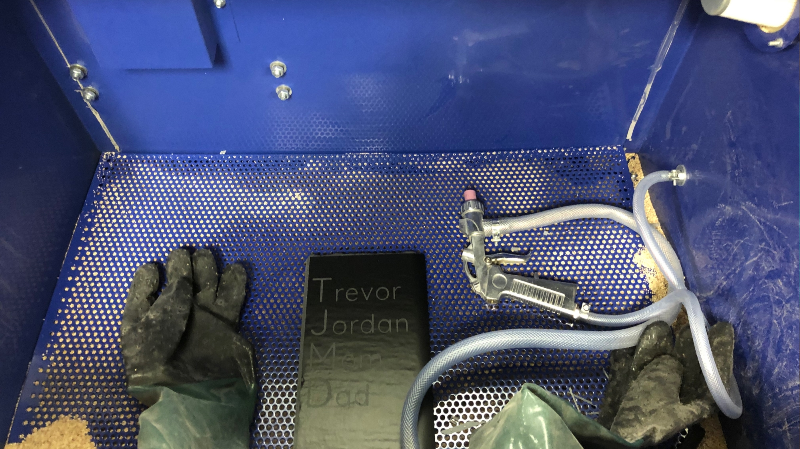

Project: Slate Manuscript
Setting: 3D Print with Brim ON and Supports OFF
The concept for this design is helping children learn to write their alphabet. The design is chalkboard tablets (Step 1, Step 2). Step 1 for the beginner has names etched on the chalkboard to guide writing and a manuscript with detail the sequence of lines for each letter. Step 2 has only the lines etched on the chalkboard.
I found what appeared to be a perfect Pencil Grip on Thingiverse (Link). I decided to use this STL model. During the conceptual design phase I expected to be able to update the model to fit chaulk appropirately.
The 2D design was created in Adobe Illustrator for you in the Cricut Design Software. source files for both of these software packages are included in the zip file link. the most difficult portion of the tootsie design was getting a design that I thought would be easily cut from final my criteria for this design was that it would had to have sharp right angles (i.e. a san sarif font) and had to have no slant since it was going to be used by children to learn their manuscript. I was disappointed to find that once I found a nice font in Adobe Cricut would not allow fonts to be imported in with the SVG file. Cricut requires users to use their own font library. As a result, I ended up cuttting the text vinyl in Fluke Makerspace after cutting the slate lines at King County Library xIdeas Makerspace’s Cricut Machine. I can say that without a doubt the Cricut Machine has the best user interface of any of the machines we used in this class. this is a result of two things I suspect: 1. They are a for profit machine builder. 2. They use a webapp as the design environment and connection to the machines. The webapp allows for quick UI updates without requiring users to update software packages.
Subtractive manufacturing process what started by modifying a vinyl sheet using the Cricut Machine. The vinyl sheet was then used to etch designs into the slate stone both of these processes were significantly easier than I expected. The only issue I had it with the Cricut Cutter was up there software attempts to optimize the cut out you create. That's a real song my first version ended up with a lot of lights stack together with no spacing or very small spacing beaches the Cricut Machine software assume that I just wanted a bunch of narrow lines. to resolve this issue I ended up creating a rectangle that covered my sleep and then subtracting the lights from that rectangle. This ensured that the Cricut Machine software would not try to rearrange the objects on my SVG file to optimize for printing. The use of glass etching compound could not have been any easier. Let me take that back the only thing that could have made it easier as if it wasn't so hazardous.
The subtractive manufacturing process represents one deviation I had from my planned design. hyperice you will see in the images in Row 3 above it was not for lack of trying I attempted to use a method that we did not cover in class and media blast the Slate. What I found in my testing was that the final required much less abuse they had the amount of abuse that was required to subtract from the Slate. As a result I ended up with using etching as my subtractive method vs media blasting.
I thought the 3D design was going to be a piece of cake based on the reusing objects from thingiverse. However I did find that there was one critical flaw in using a single STL file from thingiverse. the object that I wanted to print something for actually had the makeup of two independent objects. since the thingiverse user Post-it the file as a single STL file I could not scale them independently. That's a real Salt in My YouTube playlist you will see a rhino file being built with a tube, a truncated cone as independant parts.
The fitting of the chalk inside of the grip was the most challenging portion of this project for me. the challenge was presented in a way that the design was a perfectly circular tube. Chaulk is also perfectly circular. These two circles trying to fit inside of each other perfectly results in a design challenge. If the grip circle ends up being microns too small the chalk will not fit inside the grip. If the grip Circle ends up being microns to large the chalk will simply slide right through and not be useful. to account for this design challenge, I ended up adding a feature to the grip that I have not attended in my original concept proposal. I added two ellipsoid sites that are close to where your middle finger and thumb rest on the writing utensil. this will result in play children being encouraged to hold their writing utensil correctly. I guess it goes to show that sometimes the greatest challenges inadvertently result in the greatest features resulting from design workarounds for those challenges.
The nice thing about my fabricated part is that it not require significant structural integrity (i.e. thick walls). This helped ensure that it was a quick 3D print. the gradual change in elevation on the area of the ellipsoid it's being subtracted allowed me to print without supports. Based on past projects I found that printing without supports is always worth trying for at least one print. in previous project we found that the support rent will always leave some residual material after being broken off so for a clean look you need to modify your design to be able to print without supports.
$09.99 - Slate Cheese Boards
$17.56 - Armour Etch 10-oz Glass Etching Cream
$09.50 - Oracal ORAMASK 813 Stencil Film Roll for Cricut
$27.00 - Black 1.75mm PLA
$00.99 - Crayola Chalk 12 Pack